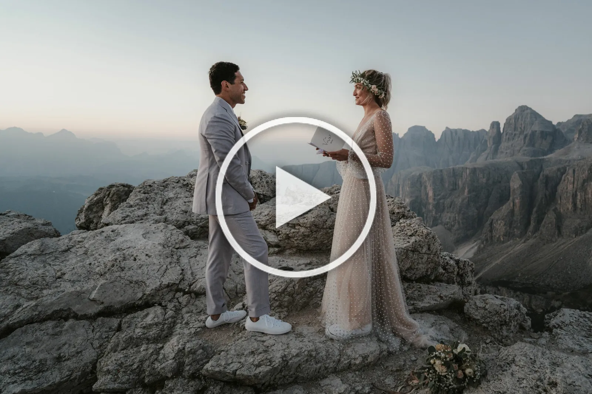
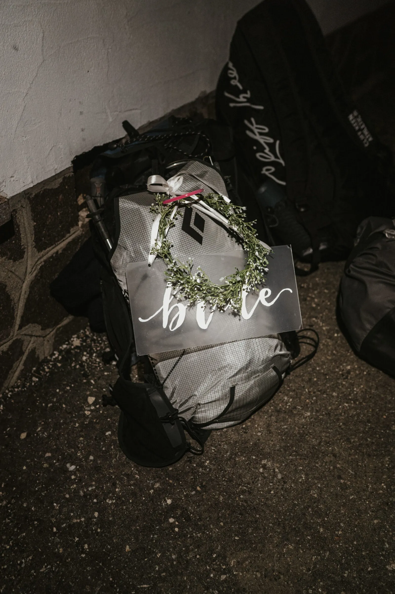
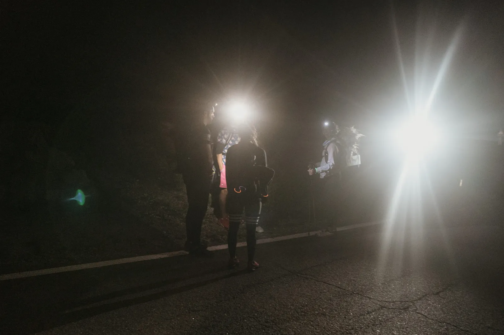
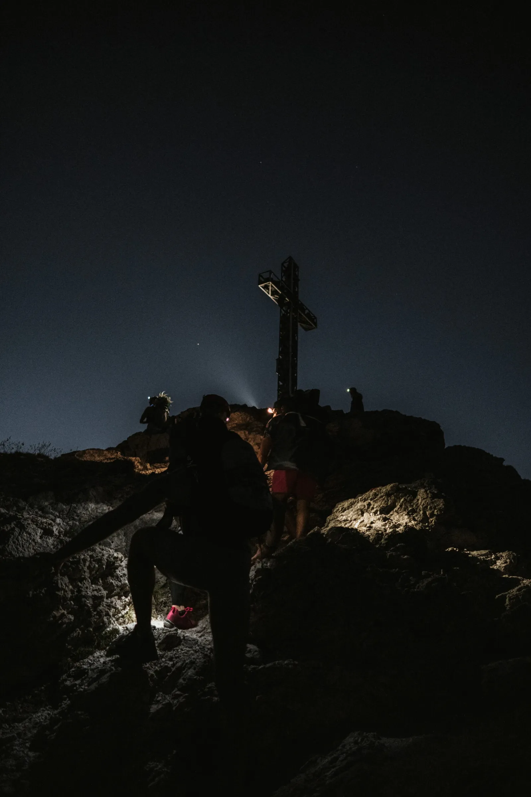
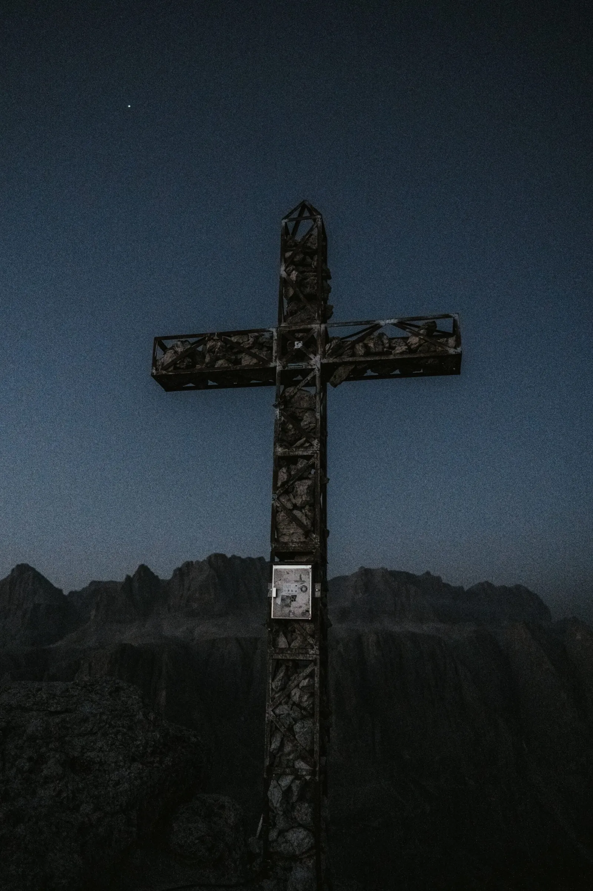
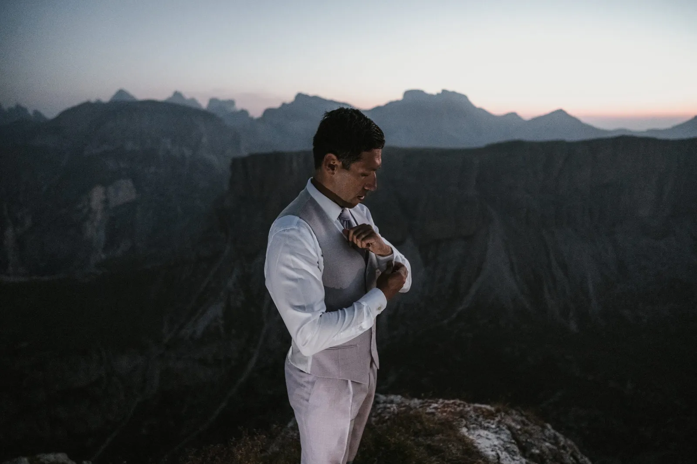
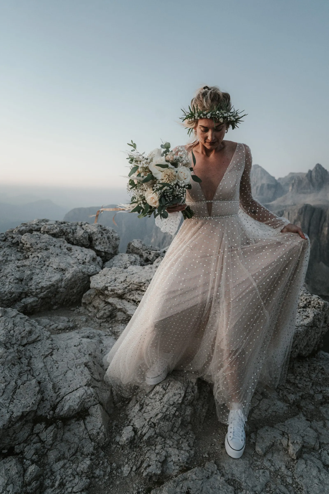
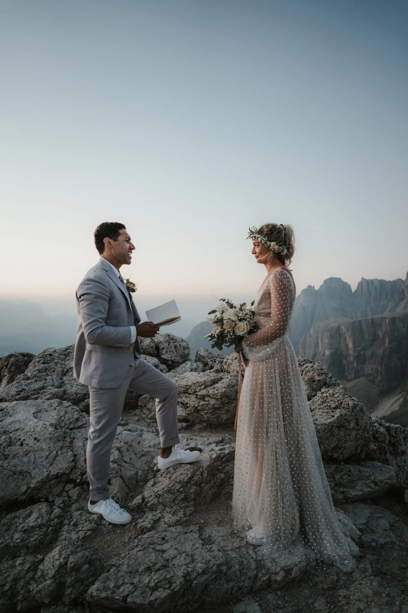
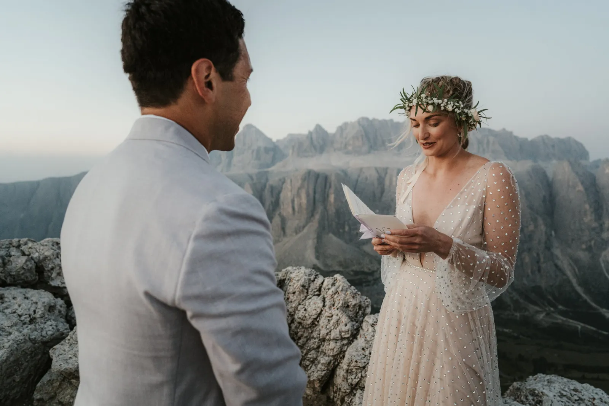
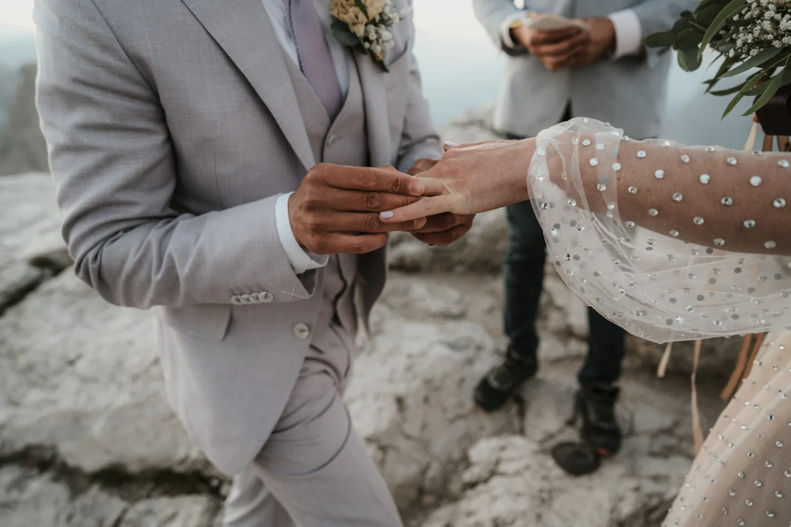

A solas con el alpenglow — otro amanecer, otra cima guardada solo para dos.
Hay una razón por la que volvemos siempre al amanecer: por una hora sincera los Dolomitas son de quien está dispuesto a perder el sueño. Abrigados contra el frío, vieron el color trepar por la roca y dijeron las palabras mientras el mundo seguía vacío.
Suele bastar un corto paseo antes del alba. A cambio recibís una soledad que el dinero no compra y una luz que dura solo minutos.
Planificación Dolomites Wedding Planner · Film No Matter The Weather · Foto Blitzkneisser · Maquillaje Viki Aichner





Perded una hora de sueño, quedaos con toda la montaña.




